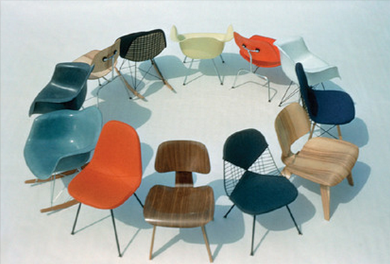

Charles Eames, in 1907 geboren in Saint Louis, Missouri. Hij studeerde architectuur aan de universiteit van Washington. In 1930 opent hij zijn eigen architectenbureau samen met Charles M. Gray. In 1935 begint hij samen met Robert T. Walsh een ander architectenbureau en in 1938 ontvangt hij een beurs aan de Cranbrook Academy of Art in Michigan, waar hij een jaar later Design doceert. In 1940 wint hij samen met Eero Saarinen de eerste prijs bij de wedstrijd 'Organic Design in Home Furnishings' (organisch design voor woonkamerinrichtingen') van het Museum of Modern Art in New York en wordt hij hoofd van de afdeling Industriële Vormgeving aan de Cranbrook Academy of Art. In 1941 trouwt hij met Ray Kaiser.

Ray Eames, in 1912 geboren als Ray Kaiser in Sacramento, Californië. Ze studeerde schilderkunst aan de Bennett College in Millbrook, New York. Tot 1937 volgt zij de cursus portretschilderen aan de Hofman School en in 1937 neemt ze deel aan de eerste tentoonstelling van abstracte Amerikaanse kunstenaars in het Riverside Museum in New York. In 1940 schrijft ze zich in aan de Cranbrook Academy of Art en in 1941 trouwt ze met Charles Eames.
Auteur: Marvy Gerard.